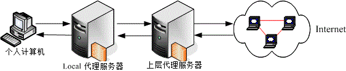

17.1 什么是代理服务器 (Proxy)
代理服务器 (Proxy) 的原理其实很简单啦！就是以类似代理人的身份去取得用户所需要的数据就是了！ 但是由于它的『代理』能力，使得我们可以透过代理服务器来达成防火墙功能与用户浏览数据的分析！ 此外，也可以藉由代理服务器来达成节省带宽的目的，以及加快内部网络对因特网的 WWW 访问速度！总之， 代理服务器对于企业来说，实在是一个很不错的东西啊！
17.1.1 什么是代理服务器
在真实世界中，我们或许会帮忙家人去办理一些杂务吧！举个例子来说，例如缴费或者是申办提款卡等等的， 由于你并不是『申请者本人』而是『代理人』的角色，因此有时候会需要秀出一些证件就是了。 那么在网络上面的代理服务器 (Proxy Server) 是怎么回事呢？它最主要的功能就如同我们上面提的真实世界一样， 当客户端有因特网的数据要求时，Proxy 会帮用户去向目的地取得用户所需要的数据。 所以，当客户端指定 WWW 的代理服务器之后，用户的所有 WWW 相关要求就会通过代理服务器去捉取啰！ 整个代理服务器与客户端的相关性可以由下图约略看出一个端倪：
 图 17.1-1、代理服务器、客户端与因特网的相关性示意图
图 17.1-1、代理服务器、客户端与因特网的相关性示意图
一般来说，代理服务器会架设在整个区网的单点对外防火墙上头，而在区网内部的计算机就都是透过 Proxy 来向因特网要求数据的，这就是所谓的『代理服务器』啦！当然，上面的架构仅只是一个案例，但是这个架构比较多人用的原因， 是因为这样的 Proxy server 还可以兼做高阶防火墙之用啦！
在 Proxy 与客户端的相关性当中，你必需要了解的是：客户端向外部要求的资料事实上都是 Proxy 帮用户取得的，因此因特网上面看到要求数据者，将会是 Proxy 服务器的 IP 而不是客户端的 IP。 举个例子来说，假如鸟哥在我的浏览器设定了我们学校的代理服务器主机 proxy.ksu.edu.tw 做为我的 Proxy 好了，再假设我的 IP 是 120.114.141.51 ，那么当我想要取得 Yahoo 的新闻信息时，事实上，都是 proxy.ksu.edu.tw 帮我去取得的，所以在 Yahoo 的网站上面看到要求数据的人是谁呢？呵呵！当然就是 proxy.ksu.edu.tw 而不是 120.114.141.51 啰！这样可以了解 Proxy 的功能了吗？
除了这个功能之外，Proxy 还有一个很棒的额外功能，那就是防火墙的功能！ 看一下上面的图示，你可以发现一件事情，那就是客户端的个人计算机要连上因特网一定要经过 Proxy 服务器。并且，如果有人想要入侵你的系统时，由于你的 proxy 在最外部啊，所以攻击者就会攻击错方向，如此一来，不就比较安全！ 此外，由于整个因特网对外都是经过 proxy ，也就是『单点对外』的情况，这种状态底下要来管理防火墙也是比较简单的喔！^_^
17.1.2 代理服务器的运作流程
了解了 Proxy 的功能之后，我们来谈一谈那么 Proxy 到底是怎样运作的呢？为何它会有『加快网络存取效率』的好处？ 这就必需要以底下的图示来说明了！
 图 17.1-2、代理服务器的运作流程图：快取数据与客户端
图 17.1-2、代理服务器的运作流程图：快取数据与客户端
当客户端指定了代理服务器之后，在客户端想要取得因特网上面的信息时，它是这样取得数据的 (注：那个 Cache 表示为 Proxy 服务器的硬盘的意思)：
当 Proxy 的快取拥有用户所想要的数据时 (Step a ~ d)：
Client 端向 Server 端发送一个数据需求封包；
Server 端接收之后，先比对这个封包的『来源』与预计要前往的『目标』网站是否为可接受？ 如果来源与目标都是合法的，或者说，来源与目标网站我们的 Proxy 都能帮忙取得资料时，那么 Server 端会开始替 Client 取得资料。这个步骤中比较重要的就是『比对政策』啦，有点像是认证的感觉啦；
Server 首先会检查自己快取 (新的数据可能在内存中，较旧的数据则放置在硬盘上) 数据， 如果有 Client 所需的数据，那就将数据准备取出，而不经过向 Internet 要求数据的程序；
最后当然就是将数据回传给 Client 端啰！
当 Proxy 的快取没有用户所想要的数据时 (Step 1 ~ 5)：
Client 端向 Server 端发送一个数据需求封包；
- Server 端接收之后，开始进行政策比对；
- Server 发现快取并没有 Client 所需要的资料，准备前往因特网抓取数据；
- Server 开始向 Internet 发送要求与取得相关资料；
- 最后当然就是将数据回传给 Client 端啰！
上面的流程分析里面，我们可以清楚的知道，当 Proxy 曾经帮某位用户取得过 A 数据后，当后来的用户想要重复取得 A 数据时，那么 Proxy 就会从自己的快取里面将 A 数据取出传送给用户，而不用跑到因特网去取得同样的这份资料喔。因为没有去因特网找数据，当步骤 4 的流程很花时间时，那么透过 Proxy 忽略步骤 4 ，感觉上就好像网络速度变快了！但其实只是直接从 Proxy 的快取里面抓而已 (所以才会有人说『假象网络加速』的功能)！这就是两个流程最大的差异了。
在目前的因特网社会里，由于宽带技术已经很成熟，所以在不乱用的情况下，网络带宽理论上是足够的 (除非要连到国外去)。 那么用了 Proxy 之后效能会不会更提升呢？答案是，『应该不会』！啥？怎么会这样呢？从上面的流程分析中， 我们发现 Proxy 会常常去读取硬盘内的数据，而硬盘内的快取数据又是透过某些特殊方式在管理， 因此要找到该份数据就要花一些时间，再加上如果硬件效能 (硬盘或主板芯片组) 不佳时，那么加了 Proxy 反而会让你感觉网络传输怎么『卡卡的』呦！这点得要特别注意才行！
Tips: Proxy 对于 cache 的速度是很要求的，而这个 cache 就是硬盘啦！当然，硬盘容量必需要足够大，而且还要『足够快』才行！ 因为由上面的流程当中，我们不难发现，cache 是一直被重复存取的一个地方喔！所以硬盘的好坏就差别很大啦！可以说他是影响一个 Proxy 效能好坏的关键点呢！

17.1.3 上层代理服务器
想一想，既然 Proxy 是帮忙客户端进行网页代理的工作，那么我们的 Proxy 能不能也指定另外一台 Proxy 当成我的 Proxy 的 Proxy 呢？很绕口吧！其实流程像底下这样啦：
 图 17.1-3、上层代理服务器示意图
就是我们的 Local proxy 并不会主动的去捉数据，而是再透过『上层代理服务器』向 Internet 要求资料！这样有什么好处呢？由于可做为我们的上层代理服务器的主机通常是具有较高带宽的， 因此我们透过它去要求数据当然『理论上』速度会更快喔！而上层代理服务器最大的好处其实是在于『分流』喔！ 例如下图所示：
 图 17.1-4、以多部上层代理服务器达到分流的效果示意图
图 17.1-4、以多部上层代理服务器达到分流的效果示意图
我总共设定了三部上层代理服务器，由于这三个代理服务器对外的速度都不相同，所以，当我要去美国时，就以 Proxy1 来要求资料，要连欧洲就以 Proxy3 ，至于要连日本，就以 Proxy 2 来要求我所需要的数据，如此一来，呵呵！可以让我的 Proxy 达到最佳的效能喔！很不错吧！此外，为了节省上层 proxy 的负担，如果是其他网络位置，我们则设定由自己的 local proxy 捉取～ 设定的弹性很高呢！
由于代理服务器需要管控信任的来源端客户端计算机，因此各 ISP 仅能针对自家的用户来开放 Proxy 使用权而已。 台湾常见的几家 ISP 提供的 Proxy 有：
- Hinet： http://service.hinet.net/2004/new_adsl04.htm
- SeedNet： https://service.seed.net.tw/home/setting/server.htm
由于当用户透过 Proxy 连到因特网时，网络看到的是 Proxy 在抓取数据而不是该客户端，因此，我们不难发现 Proxy 有可能会被客户端过度的滥用，同时也有可能会被拿来为非作歹啊！所以，目前绝大部分的 Proxy 已经『停止对外开放』了，仅针对自己的网域内的用户提供本项服务而已～
因此，如果你要自行设定 Proxy 的时候，请记得去你当初申请网络的 ISP (如果是学术单位，请到贵单位的计中网页瞧瞧即可) 搜寻一下，才能比较有效的设定好你的服务器喔！因为设定错误的话，呵呵！上层 Proxy 根本不提供服务，或者是上层 Proxy 的效能并不好，那个时候你的 Proxy 也会连带的受到很大的影响啊！慎选！慎选！
17.1.4 代理服务器与 NAT 服务器的差异
或许你已经发现了一件事，那就是：在内部局域网络使用私有 IP 的客户端，不论透过 Proxy 或者 NAT 均可以直接取得 WWW 的服务，那么 NAT 与 Proxy 有没有什么不同的地方啊？它们不都是可以让内部的计算机连接出去吗？其实这两个玩意儿差异性是『相当大』的喔！ 简单说明如下：
NAT 服务器的功能： 就如同第九章提到的数据，Linux 的 NAT 功能主要透过封包过滤的方式， 并使用 iptables 的 nat 表格进行 IP 伪装 (SNAT) ，让客户端自行前往因特网上的任何地方的一种方式。主要的运作行为是在 OSI 七层协定的二、三、四层。由于是透过封包过滤与伪装，因此客户端可以使用的端口号码 (第四层) 较弹性；
Proxy 服务器的功能： 主要透过 Proxy 的服务程序 (daemon) 提供网络代理的任务，因此 Proxy 能不能进行某些工作，与该服务的程序功能有关。 举例来说，如果你的 Proxy 并没有提供邮件或 FTP 代理，那么你的客户端就是无法透过 Proxy 去取得这些网络资源。 主要运作的行为在 OSI 七层协议的应用层部分 (所谓的比较"高阶"之意)。
这样说有没有比较有点概念了呢？NAT 服务器是由较底层的网络去进行分析的工作，至于通过 NAT 的封包是干嘛用的， NAT 不去管他！至于 proxy 则主要是由一个 daemon 的功能达成的，所以必需要符合该 daemon 的需求，才能达到某些功能！
17.1.5 架设代理服务器的用途与优缺点
现在我们约略知道 Proxy 的功能了，那么通常什么情况下会架设 Proxy 呢？一般来说，代理服务器的功能主要有：
作为 WWW 的网页资料取得代理人：这是最主要的功能嘛！
作为内部区网的单点对外防火墙系统：如图 17.1-1 所示一般，如果你的 Proxy 是放在内部区网的 Gateway 上头，那么这部代理服务器就能够作为内部计算机的防火墙了！而且还不需要设定那复杂的 NAT 功能呢！只是单纯的 Proxy 服务器通常仅提供 WWW 的代理，因此内部计算机想要取得 smtp, ftp...就比较麻烦～
由于 Proxy 的这种特性，让他很常被使用于大型的企业内部，因为可以达到杜绝内部人员上班时使用非 WWW 以外的网络服务，而且还可以监测用户的资料要求流向与流量呢！很不错吧！ ^_^！好了，接下来我们来谈一谈当你架设了 Proxy 后的优缺点吧。先来谈谈主要可能具有的优点有：
节省单点对外的网络带宽，降低网络负载：当你的 Proxy 用户很多时，那么 Proxy 内部的快取数据将会累积较多。因此客户端想要取得网络上的数据时，很多将会从 Proxy 的快取中取得，而不用向因特网要求资料。 所以可以节省带宽啊！
以较短的路径取得网络数据，有网络加速的感觉：例如你可以指定你的 ISP 提供的代理服务器连接到国外，由于 ISP 提供的 Proxy 通常具有较大的对外带宽，因此在对国外网站的数据取得上， 通常会比你自己的主机联机到国外要快的多。此外，与上一点的快取数据也有关系啊！从内部硬盘取得的路径总比对外的因特网要短的多啊！
透过上层代理服务器的辅助，达到自动数据分流的效果：例如图 17.1-4 所示，让客户端在不知不觉之间，就可以得到数据由不同 Proxy 取得的加速效果！
提供防火墙内部的计算机连上 Internet：就是上面提到的单点对外防火墙功能！
由于代理服务器的这些优点，因此这里要强烈的建议，如果你需要连上国外的网页， 请一定使用 ISP 提供给你的代理服务器来帮忙，因为不但可以节省带宽，并且速度上会快上很多很多 (例如美国环保署, EPA 网站)。 不过，有利就有弊，当然 Proxy 也不是万能的天神～他有什么可能潜藏的缺点呢？
容易被内部区网的人员滥用：我们知道因特网上看到取得资料的人是 Proxy 那部主机而不是客户端计算机的 IP，因此可能会让某些内部网络使用人员开始利用你的 proxy 干坏事，此时你就会很麻烦～ 所以，为了杜绝这个状况，强烈的建议多加登录档案分析的软件，在管理上面会轻松很多喔！
需要较高超的设定技巧与除错程序：在鸟哥设定过的服务器当中， Proxy 算是比较不容易设定好『效能』的一个服务器了！由于 Proxy 的 Cache 与他的『上层代理服务器』的关系是很紧密的， 万一设定错误的话，很有可能反而让你的 Proxy 拖垮客户端 WWW 的浏览速度！最严重的是造成无法联机！
可能会取得旧的错误数据：这个最容易发生了！由于曾经浏览过的网页会被放置到快取， 并提供后续用户的直接取得。万一因特网上面的那个网页数据更新过呢？那时你会发现，怎么客户端无法看到更新后的资料？ 就是因为快取的问题啊！取得旧数据的频率可能会很高啊！
总之， Proxy 的优点是很多的，但是缺点却需要网管人员的操心啊！既然如此，那么我们到底有没有需要架设代理服务器呢？ 简单的说，我们可以这样分析！
- 我的 Client 端用户不少，而且大部分仅需要 WWW 这个网络服务而已；
- 我的 Proxy 还兼做防火墙的任务；
- 我的 Client 端常常需要联机到传输速度很慢的网站，例如国外的网站；
- 我的 Client 端常常浏览的网站是『静态』网站，而不是动态网站 (例如讨论区的 PHP)。
如果你有上述的环境状况，那么是可以考虑架设 Proxy 的，但是，相反的来说，要是 (1)我的 Client 端很少，所以每次连上 WWW 都是求取新的资料 (并没有用到快取)，有没有 Proxy 反而看不出效益～此外，(2)Proxy 由于属于应用层了，对于 Internet 的规划上弹性较不足！不像 NAT 服务器可以进行很多的功能！(3)我常常上的网站是类似讨论区那种一日多变的网站， 在这样的情况下，实在是没有必要架设 Proxy 的！
但是，如果对于学校单位那原本带宽就不足的环境中，架设 Proxy 来让校内的网络速度提升，呵呵！就是有那个必要性的啦！所以要不要架设 Proxy 呢？请好好的依据你的环境来考虑喔！但无论如何，我们还是要教大家怎么架设它就是了 ^_^